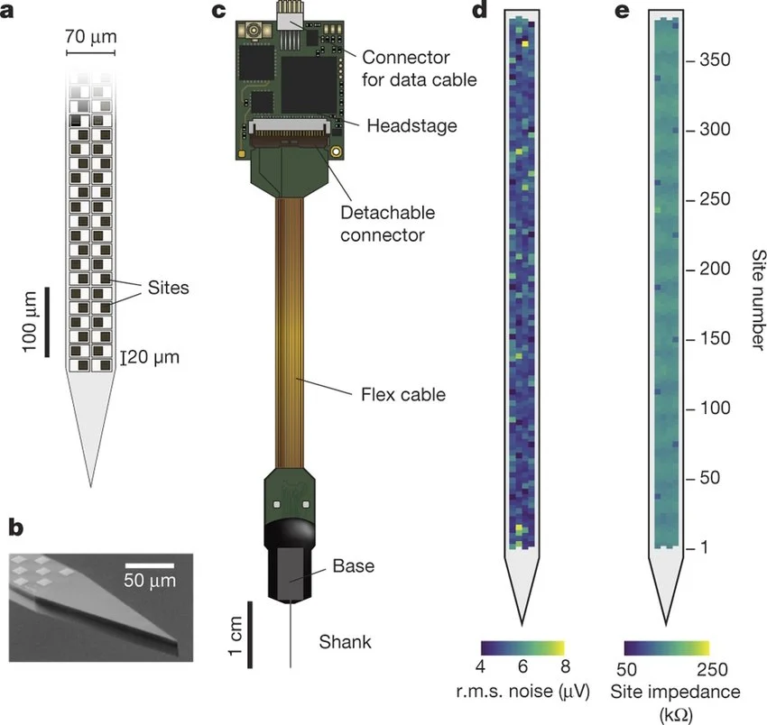
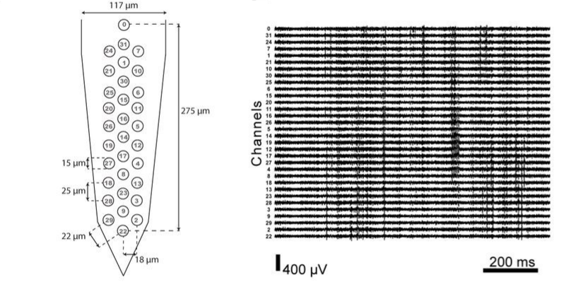
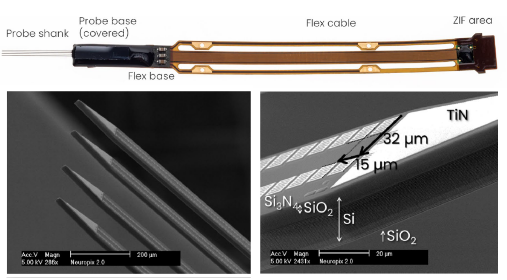
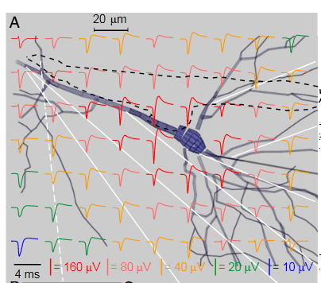
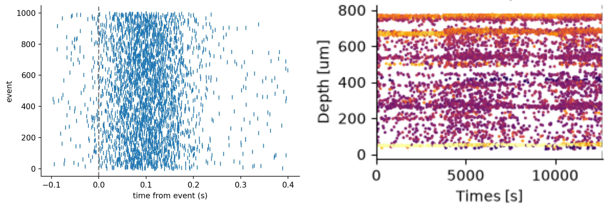
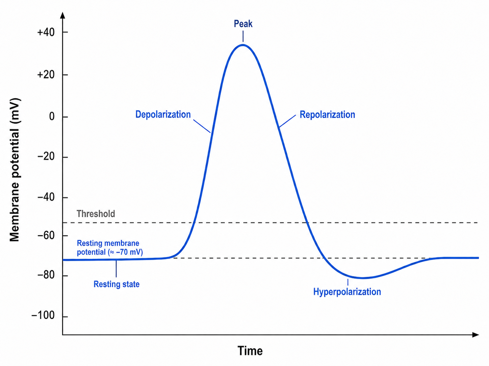
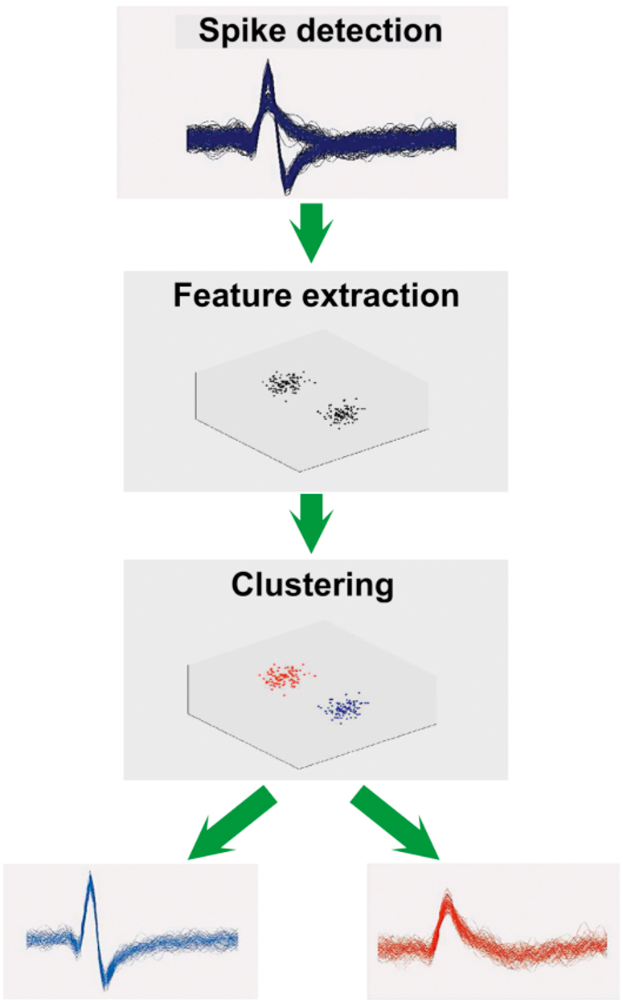
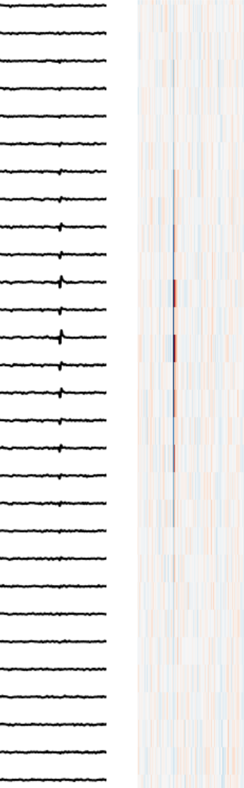
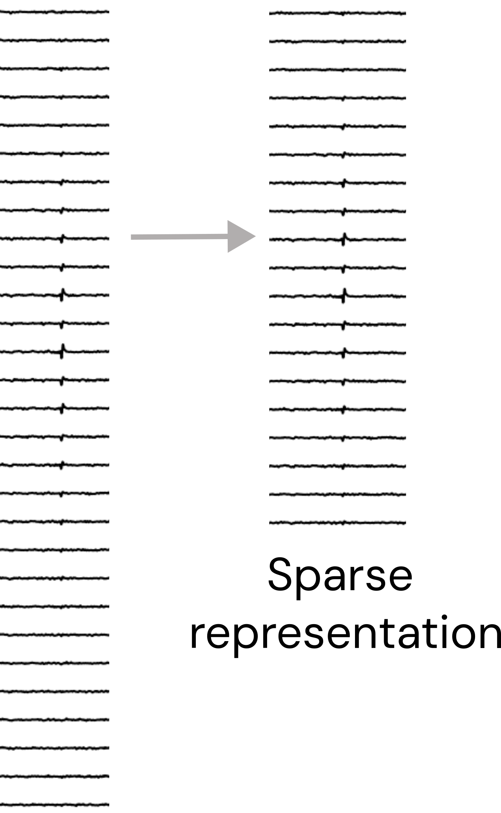
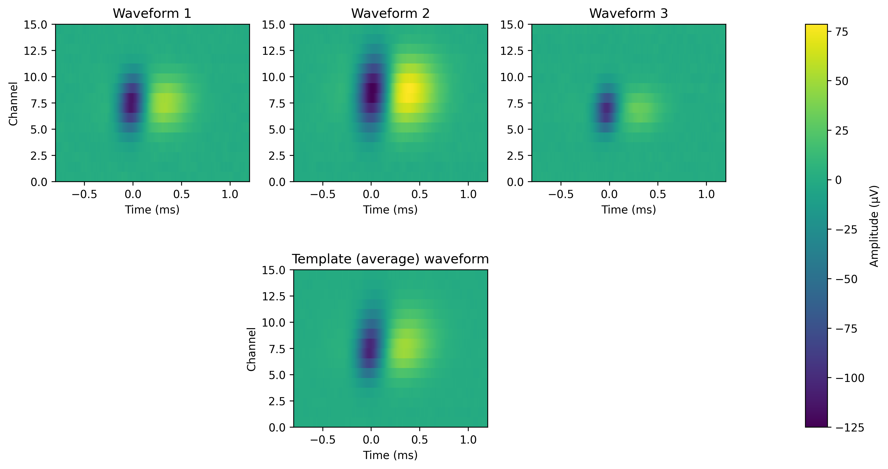

Glossary
The glossary includes short definitions of the terminology used in the course. See the Concept Notes page for more detailed explanations of key concepts and topics.
electrode: The physical recording electrode on the probe which is in contact with the tissue. It measures the local extracellular voltage relative to a reference electrode. The signal from the electrode is passed through acquisition electronics (e.g. the amplifier) before being recorded on the computer as a data stream (or ‘channel’).

contact: another term for ‘electrode’.
recording site: another term for ‘electrode’.
channel: A single stream of data obtained from a recording electrode. Often used interchangeably with ‘electrode’, ‘contact’ or ‘site’, but technically refers to the data stream from an electrode as recorded on the computer, rather than to the physical electrode itself.

shank: Modern high-density probes may consist of multiple arms, each with electrodes distributed along them. These are often referred to as shanks. Splitting the recording by shank before preprocessing and spike sorting is a common way to process multi-shank datasets.

intracellular electrophysiology: An electrophysiological recording in which the recording electrode measures the voltage across the membrane of a single cell, for example using an inserted electrode or whole-cell patch clamp. This voltage difference across the cell membrane is called the membrane potential. During an action potential, the membrane potential increases primarily due to an influx of sodium ions, so intracellular action potentials are conventionally recorded as positive-going spikes (in practice, the polarity of the recorded action potential depends on amplifier configuration).
extracellular electrophysiology: An electrophysiological recording in which the recording electrodes are positioned in the extracellular space. Extracellular probes can therefore record action potentials from many neurons close to the probe. The voltage is recorded relative to a reference electrode, which may be positioned outside the brain tissue (e.g. on the skull or in a saline bath) or on the probe itself within the brain (e.g. a tip reference).
Extracellular action potentials typically produce a negative extracellular voltage because the influx of positive sodium ions during an action potential produces a transient negative potential near the active membrane. By convention, this is usually recorded as a negative-going spike (in practice, the polarity of the recorded action potential depends on amplifier configuration).

raster plot: A plot showing the timing of detected spikes, with each mark representing a single spike. The x-axis represents time, while the y-axis depends on the application. It commonly represents trial number, for example to show how reliably a single neuron fires relative to a behavioral event across repeated trials. In motion-correction drift maps, the y-axis can instead represent the position of each spike on the probe. The color or intensity of each mark may be used to indicate spike amplitude; otherwise, all spikes may be shown uniformly.

action potential: When activity drives the membrane potential of a neuron past a threshold, it ‘fires’ an action potential. This characteristic waveform includes a rapid depolarizing phase, fast repolarization, followed by a characteristic membrane hyperpolarization. The action potential can trigger the release of neurotransmitters at synapses, which in turn influence the membrane potential of downstream neurons. In this way, action potentials form the basis of information transfer through neural circuits.

spike: Often used interchangeably with action potential. In extracellular electrophysiology, however, a spike usually refers to a brief extracellular voltage signal presumed to have been generated by a neuronal action potential. Spike-detection algorithms identify these events from the recorded signal, but some detected spikes may instead arise from noise or other artifacts. In contrast, an ‘action potential’ refers specifically to the underlying biological event in the neuron.
unit: A collection of spikes that a spike-sorting algorithm has assigned to the same putative neuron. In principle, a ‘good’ unit should contain only spikes from a single neuron.
cluster: Often used interchangeably with ‘unit’. Technically this refers to the clustering of the waveforms or other spike features when plot in low-dimensional space. This produces clusters of spikes in the low dimensional space which can be used during spike sorting to assign spikes to units.

putative neuron: Ideally, each well-isolated unit produced by spike sorting represents the action potentials of a single real neuron. However, spike sorting is imperfect: a unit may contain spikes from other neurons or noise, and may fail to include some spikes from the neuron it represents. The term putative neuron emphasizes that we interpret a unit as the activity of a single neuron, while acknowledging that its true biological identity cannot be known with complete certainty from extracellular recordings alone.
waveform: A spike waveform is the shape of a detected spike as recorded on the probe. Typically a spike waveform is detected only on a subset of the recording channels. Often the waveform is ‘cut’ from the data by storing only a small time window on the channels on which the spike waveform has detectable signal.

sparsity: The sparsity of a spike waveform refers to whether the waveform is represented using all recording channels or only a subset of channels on which the waveform has appreciable signal. A sparse representation stores the waveform only on this subset of channels (which may be selected using a signal threshold, spatial distance, or another criterion).

template: A representative waveform for a unit. Given that a unit is simply a collection of spikes that we believe come from the same neuron, we can generate representative waveform by taking an average (e.g. mean or median) over all of the individual spike waveforms assigned to a unit. The template is typically represented across the same set of channels as the individual waveforms used to calculate it.

The term template is also used in template-matching spike sorting. In these methods, many canonical ‘template’ waveforms are generated and matched against the continuous recording. When the data closely match a template, a spike is detected and can be assigned to the unit associated with that template. In this sense, the template is again a representative waveform for a unit, but it is being used actively to find and classify spikes in the recording.